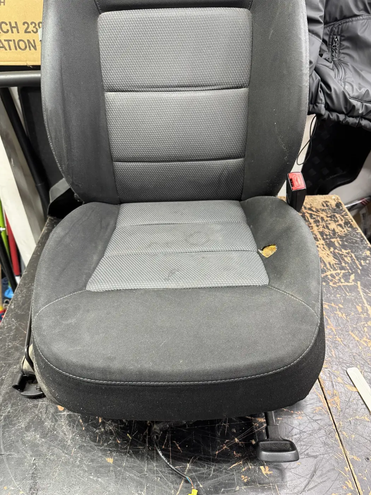

{{așa vine|how it arrives|como chega}}{{Scaune|Seats|Bancos}}
{{Îmbrăcare nouă sau refacere: fețe uzate, cusături desfăcute, burete lăsat. Pe față, pe spate, pe toată bancheta.|New covers or a rebuild: worn faces, split seams, sagging foam. Front, rear, the whole bench.|Forra nova ou recuperação: faces gastas, costuras abertas, espuma abatida. À frente, atrás, o banco todo.}}